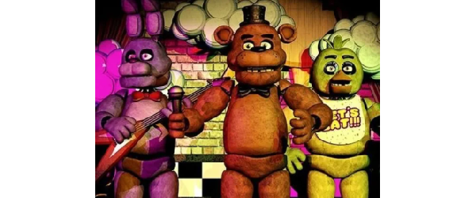

O primeiro jogo da franquia *Five Nights at Freddy's* traz o jogador como Mike Schmidt, um vigia noturno em uma pizzaria onde os animatrônicos ganham vida à noite, atacando qualquer pessoa que se aproxime. O objetivo é sobreviver às noites utilizando câmeras de segurança e sistemas de segurança. A cada noite, a intensidade dos ataques dos animatrônicos aumenta. É revelado que eles foram possuídos pelos espíritos de crianças assassinadas, vítimas de um homem misterioso conhecido como William Afton, também referido como o Homem Roxo. O objetivo de Mike é sobreviver até as 6 da manhã, evitando ser pego pelos animatrônicos, que o confundiriam com um endoesqueleto sem fantasia e tentariam "corrigir isso" colocando-o dentro de um traje animatrônico, o que seria fatal.
